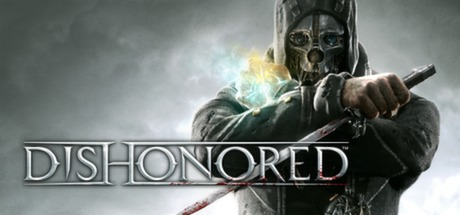
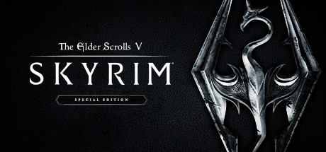

Games That I Would Reinstall
These are six video games that I would definitely reinstall. These are games that I can get truly lost in when I play them. If I could only choose 6 games to play for the rest of my life, it very well may be these.

Morrowind
2002 / RPG / Vvardenfell
Morrowind is the one game that I think I'm the most nostalgic about. I like that when someone gives me directions to a cave, I have to actually pay attention to the landmarks. The sense of true adventure is the majority of the fun.

Cyberpunk 2077
2020 / RPG / Night City
I love seeing how much the cyberware implants within the universe can drastically change how I play the game. I'm constantly finishing missions and thinking about how I could've approached it differently if I had different cyberware installed.

The Witcher 3
2015 / RPG / The Continent
I'm a massive fan of the main character Geralt. As a detective, some of my favorite missions in the game are the monster hunting / investigation missions. Having to find the clues of what monster is causing issues is such a major part of the fun.

Red Dead Redemption 2
2018 / Action-adventure / American frontier
I have always loved the idea of the Wild West ever since I was a small kid, so this was the perfect game to live that cowboy/outlaw fantasy. I've spent more hours than I'd like to admit just riding through the world on my horse doing nothing but admiring the scenery.

Dishonored
2012 / Stealth / Dunwall
I love the atmosphere of Dunwall as well as the stealthy gameplay, which just feels like a very refined supernatural version of the Thief series. The different ways of approaching missions is a lot of fun especially with how your approach affects the ending of the game. This is the pinnacle of stealth games in my opinion.

The Elder Scrolls V: Skyrim
2011 / RPG / Skyrim
This is a game that I'm constantly starting a new character since it does such a good job capturing the different class fantasies. I have spent an absurd amount of time playing this game, with a large part of that spent on just modding alone.